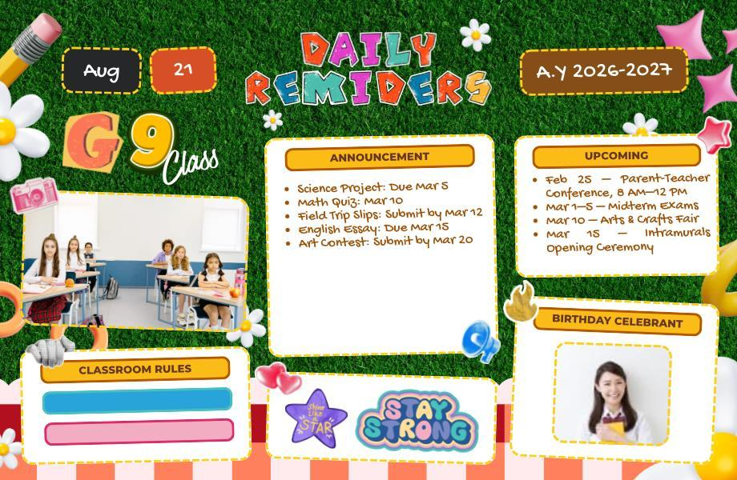

CLASSROOM COMMUNICATION01

VISUAL PROPOSAL / FIELD STUDY 1A place
A place
to belong.
A classroom board that informs and welcomes.
Bringing reminders, activities, and encouragement into one thoughtful space. An exploration of how visual organization can support classroom life.
Explore the artifact